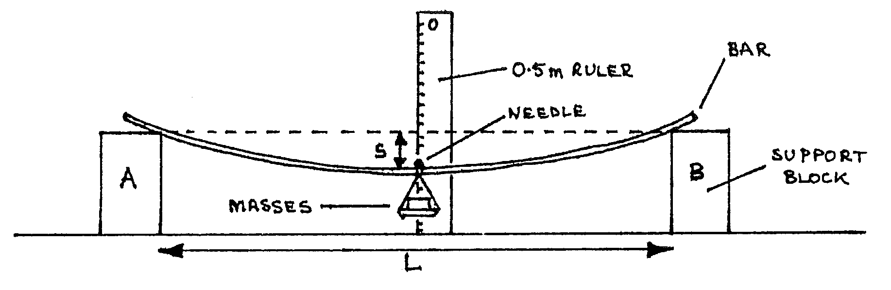

80 ALT B-Q1: Young’s modulus by Bar Bending¶
Time: \(1 \frac{1}{2}\) hr.
Apparatus¶
Wooden bar (thin metre rule is suitable); supporting blocks; \(0.5\text{m}\) rule held by clamp & stand; needle & plasticene; scale pan with loop; 3 \(\times\) \(100\text{g}\) and 1 \(\times\) \(50\text{g}\) masses; 1 sheet graph paper.

The aim of this experiment is to determine the Young’s modulus of the material of the bar. Proceed as follows:
Place the wooden bar symmetrically on the supports A and B. Keep the distance \(L\) between the blocks about \(90\text{cm}\). Record the distance \(L\), and this should not be changed during the experiment; also ensure that the protruding lengths of the bar are equal. The vertical metre rule should be placed in line with the centre of the bar. The pointer needle is attached to the bar at its center. Record the pointer reading on the vertical metre rule when the bar is unloaded, and call this reading \(X_0\). (2 marks)
With mass \(m\), say \(50\text{g}\) on the scale pan, record the resulting pointer reading \(X\) on the vertical metre rule, and hence determine the sag, \(s = X - X_0\). Repeat this procedure for 5 other readings of \(m\) (see diagram). (10 marks)
Measure the breadth \(b\) and thickness \(d\) of the bar. (8 marks)
Plot a graph of \(m\) vs. \(s\). (10 marks)
Calculate the Young’s modulus, \(E\), of the bar given that:
\[E =\frac{g L^3 m}{4 b d^3 s} \qquad \text{and} \qquad g = 9.8 \text{ms} ^{-2}\](11 marks)
- State any sources of errors and precautions taken in this experiment. (5 marks)
- Determine the order of accuracy of your results. (4 marks)